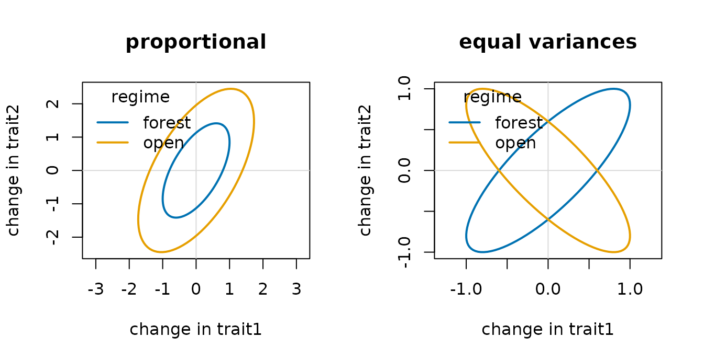
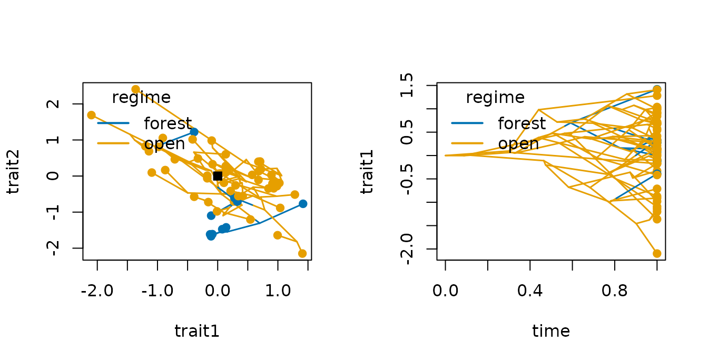
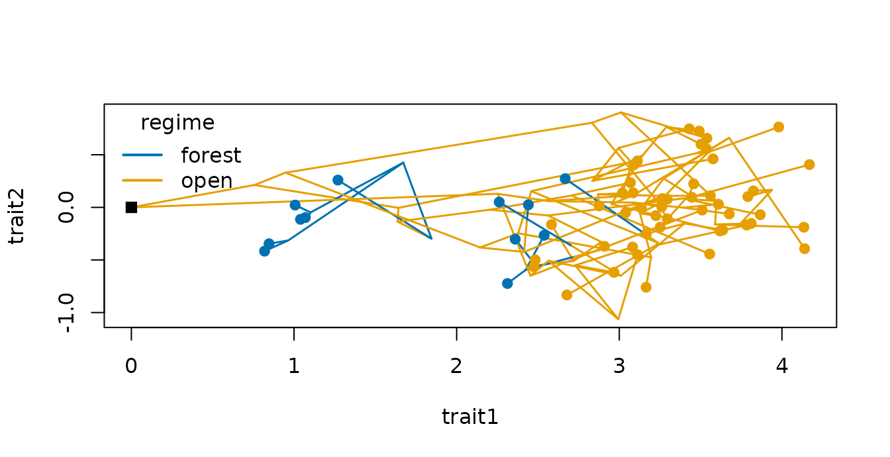
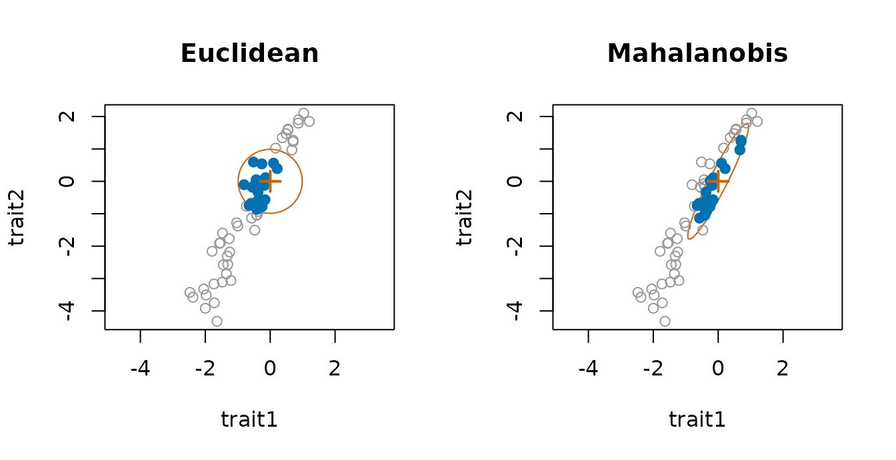
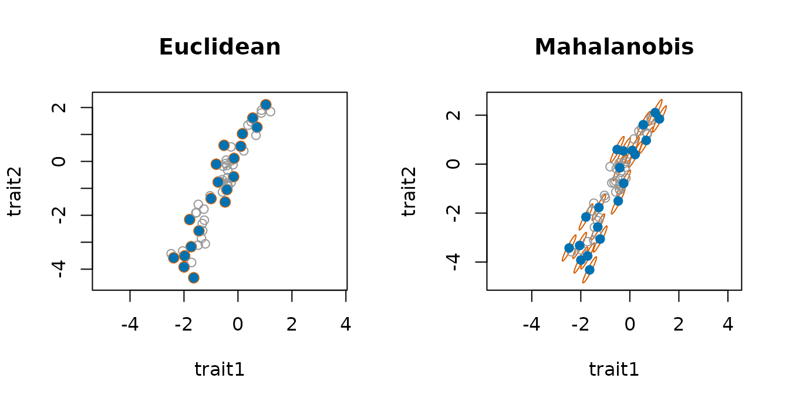

Correlated traits and assembly in trait space
Source:vignettes/articles/correlated-traits.Rmd
correlated-traits.RmdSpecies differ in several traits at once, and those traits rarely evolve independently. This article shows how comdynamite simulates several correlated traits along a tree, how selective regimes can change the rates, the correlations and the optima, and how community assembly then uses distances in a space of several traits.
library(comdynamite)
set.seed(4)
tree <- treeshapesim::sim_tree_shape(60)Evolutionary rate matrices
Under multivariate Brownian motion, the changes of the traits per
unit time have a covariance matrix, the evolutionary rate matrix: its
diagonal holds the rate of each trait and its off-diagonal elements the
evolutionary covariances. rate_matrix() builds it with the
structures that mvMORPH fits (Clavel et al. 2015). With one matrix for
the whole tree:
rate_matrix(c(1, 0.5), correlation = 0.8)
#> <rate_matrix> default structure, 2 traits
#> trait1 trait2
#> trait1 1.0000000 0.5656854
#> trait2 0.5656854 0.5000000
rate_matrix(1, correlation = 0.3, constraint = "equal", n_traits = 3)
#> <rate_matrix> equal structure, 3 traits
#> trait1 trait2 trait3
#> trait1 1.0 0.3 0.3
#> trait2 0.3 1.0 0.3
#> trait3 0.3 0.3 1.0With selective regimes, each regime can have its own matrix,
constrained in the ways of mvMORPH::mvBM(): proportional
matrices, shared eigenvectors, the same variances or the same
correlations. Each matrix is drawn as the ellipse of the changes of two
traits in one unit of time.
op <- par(mfrow = c(1, 2))
prop <- rate_matrix(c(1, 2), correlation = 0.6, constraint = "proportional",
scale = c(forest = 1, open = 3))
plot(prop, main = "proportional")
flip <- rate_matrix(c(1, 1), correlation = list(forest = 0.8, open = -0.8),
constraint = "variance")
plot(flip, main = "equal variances")
par(op)Traits on a history of habitats
trait_mk() simulates a discrete character on the tree,
here the habitat of each lineage, with changes inside branches.
traits_ou() takes that mapped history as
regimes, so that the rates (and, with
alpha > 0, the optima) change at the moment the habitat
changes. plot_traits() draws the result as a
phylomorphospace, with the branches coloured by habitat, or, for one
trait, as a traitgram.
habitat <- trait_mk(tree, q = 0.4, states = c("forest", "open"))
x <- traits_ou(habitat, sigma2 = flip, regimes = habitat)
op <- par(mfrow = c(1, 2))
plot_traits(x, habitat, regimes = habitat)
plot_traits(x, habitat, traits = 1, regimes = habitat)
par(op)Optima can also differ between traits. With a matrix
theta, one row per regime and one column per trait, the
open habitat below moves the optimum of the first trait only.
theta <- rbind(forest = c(0, 0), open = c(4, 0))
y <- traits_ou(habitat, alpha = 2, sigma2 = rate_matrix(c(1, 1), correlation = 0.5),
theta = theta, regimes = habitat)
plot_traits(y, habitat, regimes = habitat)
Assembly in a space of several traits
assemble_community() removes species by their distances
in trait space. With correlated traits, Euclidean distances count the
shared direction of variation more than once; the Mahalanobis distance
treats each independent direction as one axis, and
"standardized" divides each trait by its standard deviation
in the pool. The help of assemble_community() discusses
which to choose. plot_assembly() shows the result in the
metric of the assembly: for filtering, the boundary of the filter around
the optimum.
z <- traits_ou(tree, sigma2 = rate_matrix(c(1, 4), correlation = 0.9))
op <- par(mfrow = c(1, 2))
plot_assembly(assemble_community(z, 20, rule = "filtering", optimum = c(0, 0)),
main = "Euclidean")
plot_assembly(assemble_community(z, 20, rule = "filtering", optimum = c(0, 0),
distance = "mahalanobis"), main = "Mahalanobis")
par(op)Under limiting similarity, the contours have half the smallest distance between the species kept, so that they touch but do not overlap.
op <- par(mfrow = c(1, 2))
plot_assembly(assemble_community(z, 20), main = "Euclidean")
plot_assembly(assemble_community(z, 20, distance = "mahalanobis"), main = "Mahalanobis")
par(op)A niche with several environmental axes
In the dynamic model, simulate_metacommunity() takes one
set of traits per environmental axis and a matrix env with
one column per axis; the growth rate of a species is the product of its
responses to each axis. as_mc_data() keeps every axis, and
summary_stats() uses the first unless given another.
land <- landscape_grid(side = 6)
temperature <- species_traits(tree)
moisture <- species_traits(tree, rmax_range = c(1, 1))
env <- cbind(temperature = land$env, moisture = rev(land$env))
sim <- simulate_metacommunity(land, list(temperature = temperature, moisture = moisture),
competition_matrix(tree, "phylo"), n_steps = 200, env = env)
sim
#> <mc_sim> 36 sites x 60 species
#> species persisting: 44 of 60
#> mean local richness: 6.08
head(as_mc_data(sim)$traits)
#> optimum_temperature optimum_moisture
#> t1 14.297495 64.01584
#> t2 3.754062 40.16451
#> t3 37.814580 36.49067
#> t4 38.411454 39.94681
#> t5 9.640216 37.70469
#> t6 14.992236 34.72507Validation
data-raw/validation_mvtraits.R
compares traits_ou() with mvMORPH (version 1.2.3). Over
20000 simulations with two regimes that change within branches, the
covariances of the tips stayed within 2.9 Monte Carlo standard errors of
their expected value, \sum_k R_k \otimes
C_k (mvMORPH’s mvSIM(): 2.8), and under an
Ornstein-Uhlenbeck process within 3.1 standard errors of the covariance
of Hansen (1997). Fitting mvBM() with the same constraint
to simulated traits of 100 tips recovered each structure, with the
median of 30 fits within 9% of each element of the true matrices.
References
Clavel, J., Escarguel, G., & Merceron, G. (2015). mvMORPH: an R package for fitting multivariate evolutionary models to morphometric data. Methods in Ecology and Evolution, 6, 1311–1319. https://doi.org/10.1111/2041-210X.12420
Hansen, T. F. (1997). Stabilizing selection and the comparative analysis of adaptation. Evolution, 51, 1341–1351. https://doi.org/10.1111/j.1558-5646.1997.tb01457.x